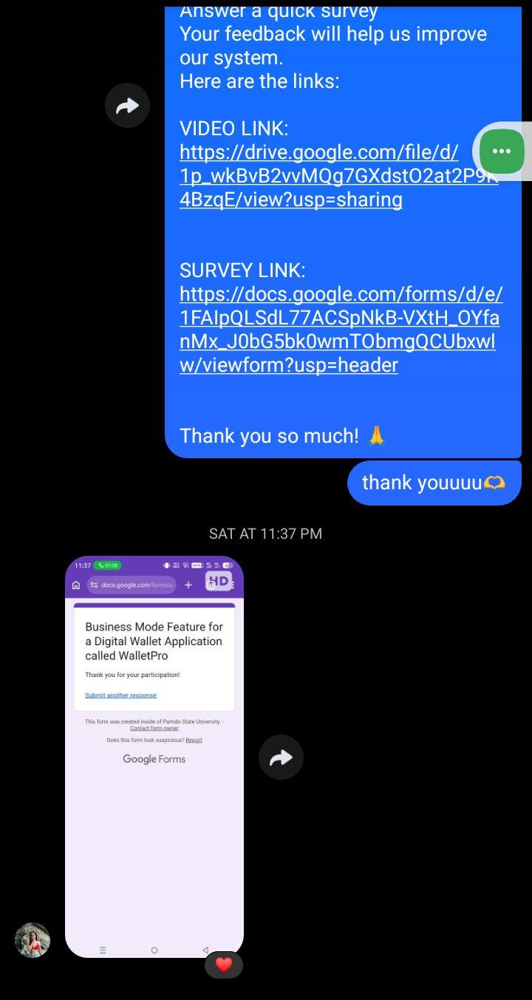
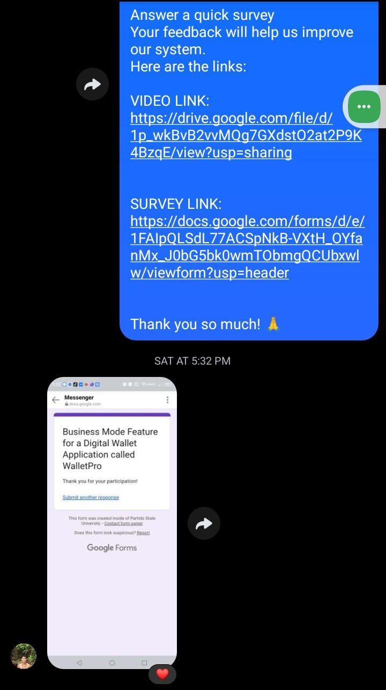
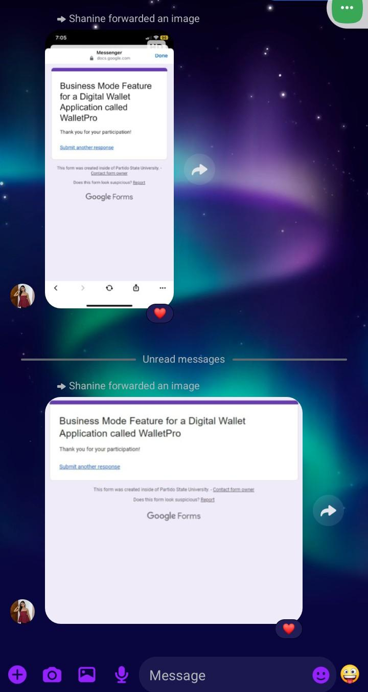
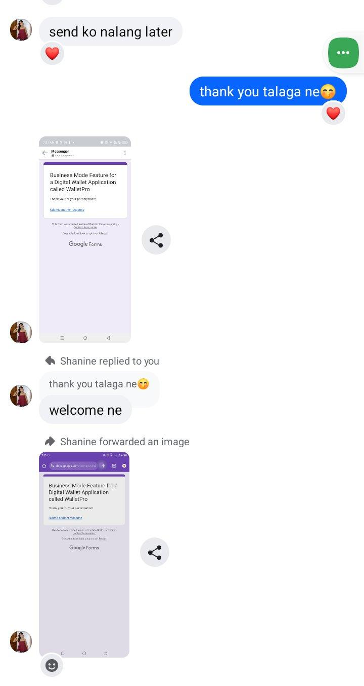
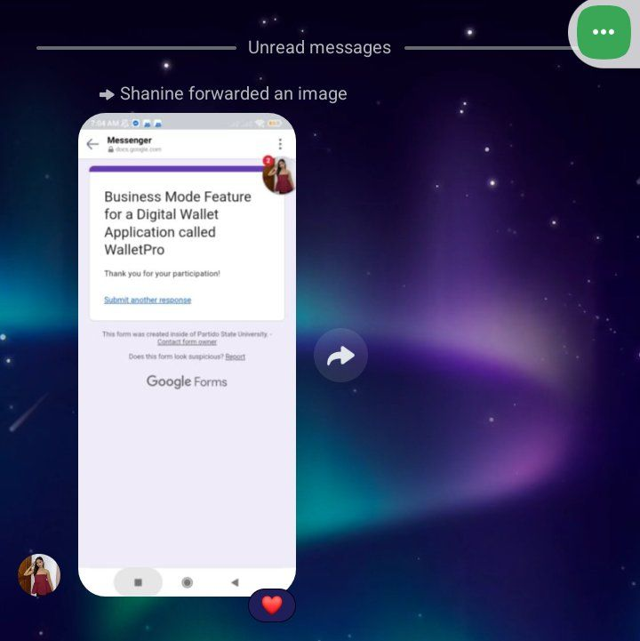
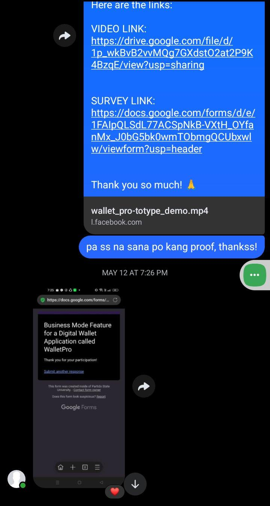
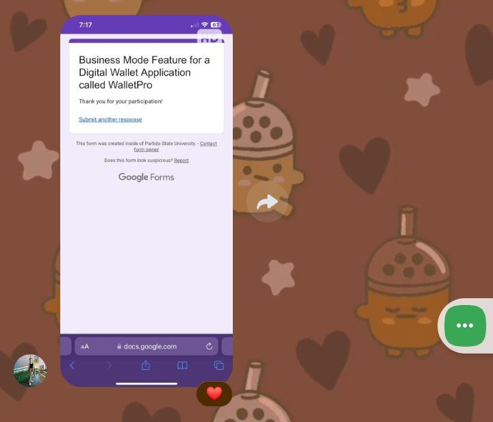
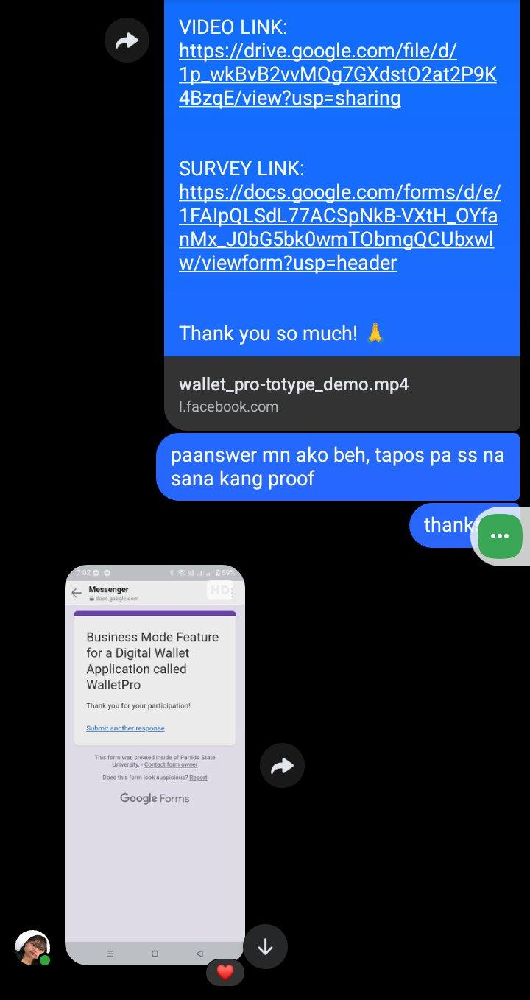

Consent Form
Place your consent form content or embed a PDF here. You can use an <iframe> to embed a PDF file stored in assets/docs/.
Usability Instruments
Survey instruments used during usability testing sessions.
Information for this study was gathered through an online survey conducted using Google Forms. This method was selected to efficiently reach participants and provide them with the flexibility to review the project materials at their own pace. To ensure participants were well-informed before answering, a video demonstration of the WalletPro prototype and a direct link to the interactive prototype were provided for their reference. The research team maintained consistency by utilizing a standardized digital survey instrument, where all responses were automatically recorded and organized to ensure data integrity and completeness.
Documentation — Photos During Testing
Photos and supporting files captured during the usability testing sessions.







